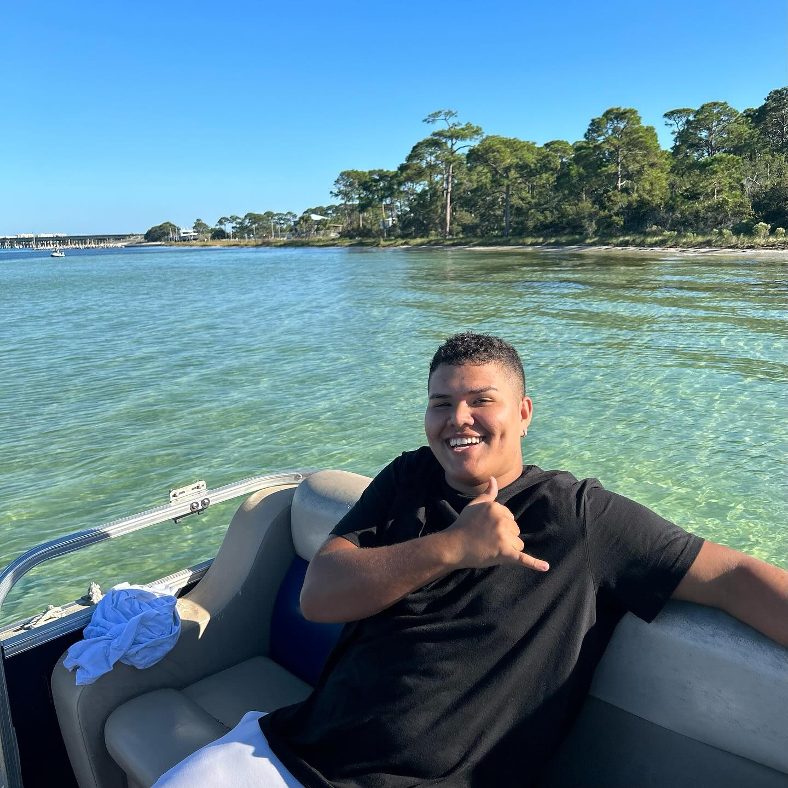

Antônio Dutra
Hi, I'm Antônio, a beginner developer currently building my foundation in programming and computer science. I'm especially interested in back-end development, databases, problem-solving, and AI. Coming from a construction background, I bring discipline, practical thinking, and the habit of learning by doing. I'm now focused on creating projects, improving every day, and growing into a professional developer.